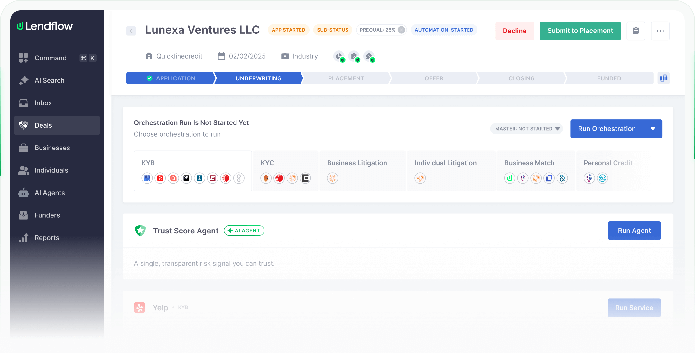

A lending workspace. Applicant name with status chips, a chevron rail from Application through Underwriting to Funded, and an "orchestration run" card that groups each check (KYB, KYC, credit) with the providers it called.
Borrow: the chevron stage rail as the default pipeline view instead of a timing waterfall, and a per-check card that names the data source behind each rule.
lendflow.com